5Zamknięte
20Częściowe
9Otwarte
6 października 2026 · porównanie z audytem UI/UX z 6.10.2026 oraz dziennikiem BeKaPaKa 2.0
Postęp jest potwierdzony, ale etapy naprawcze nie są ukończone. Z 34 zaleceń można zamknąć 5, 20 jest wykonanych częściowo, a 9 pozostaje otwartych. Zamknięte kryteria stanowią 14,7% backlogu audytu; nie jest to procent wykonania całego projektu ani wycena wysiłku. W 25 pozycjach jest potwierdzona realizacja przynajmniej części zakresu.
Produkcja różni się od lokalnego podglądu. Publiczna strona główna bekapaka.pl nadal renderuje wcześniejszy layout i linki kart składu do /sklad, podczas gdy lokalny podgląd ma system 2.0 i osobne profile. Nie ustalano wersji obrazu/commitu na VPS. Oceny 34 zaleceń poniżej odnoszą się do lokalnego projektu; nie można przedstawiać ich jako odbioru wdrożenia produkcyjnego.
Zakres i metoda
Punktem odniesienia jest docs/qa/ui-audit-2026-10-06/RAPORT-UI-UX.md z 34 kryteriami i etapami A–D. Dodatkowo sprawdzono docs/qa/bekapaka-2.0.md oraz raporty wcześniejszych poprawek. Numeracja UI-01–34 pozostaje bez zmian. Poprzednie pomiary opisano jako historyczne deklaracje raportu; nowe wnioski wynikają z bieżącego kodu, testów, DOM i nowych zrzutów.
Zbadano lokalny produkcyjny podgląd 127.0.0.1:3100: homepage, terminarz/wyniki, mecze 4144/4124, tabelę, skład, profil Damiana, aktualności i filtr Drużyna, zapowiedź oraz relację III Turnieju, lightbox, partnerów, klub, QR, menu i dokumenty. Główne zrzuty mają 390×844 i 1440×1000; finalny desktop plakatu ma 1024×1000. Dodatkowa macierz DOM obejmuje siedem głównych stron przy 768 i 1024 px. W tych 14 próbach nie ma poziomego overflow dokumentu. Przewijanie tabel we własnym regionie jest zamierzone. Lazy loading poza ekranem nie został zaliczony do brakujących zdjęć.
W tej sesji wykonano odbiór i raport, bez poprawek kodu produktu, bez deployu, zmian CMS, migracji DB ani pracy na VPS. Normalny build odtworzył katalog .next; po nim przebudowano i uruchomiono lokalny preview, aby przywrócić jego kompletne public/static. Przejściowe zrzuty z brakującymi obrazami lub błędnym kadrem wyłączono z dowodów. Log preview zawiera przerwane strumienie podczas szybkiej zmiany stron; bez odtworzenia na stabilnej stronie nie są traktowane jako potwierdzona awaria produktu.
Status Zamknięte oznacza potwierdzenie istotnego zachowania kryterium i brak znalezionej luki w jego zakresie. Częściowe oznacza działającą część rozwiązania oraz wskazaną pozostałość. Otwarte oznacza brak wymaganej zmiany lub niezamkniętą decyzję. Automatyczny test HTML nie potwierdza geometrii, integracji ani jakości danych klubu.
Weryfikacja techniczna
| Kontrola wykonana teraz | Wynik | Granica wyniku |
|---|
| Site: npm test | 134/134, 22 pliki | +16 testów i +4 pliki wobec ostatniego wpisu 118/18; testy jednostkowe/SSR |
| Site: npm run typecheck | Zaliczone | tsc --noEmit |
| Site: npm run lint | 0 błędów, 1 ostrzeżenie | Nieużywane them w MatchDrawerContent.tsx:105 |
| Site: npm run build | Zaliczone | Next.js 16.3.6; 29 wygenerowanych stron; nie dowodzi deployu |
| Lokalny preview | Build i start zaliczone | Serwer na 3100 pozostawiony działający |
| Backend: vitest run tests/unit | 94 zaliczone, 13 pominiętych; 15 plików OK, 1 skipped | Studio DB integration wymaga STUDIO_TEST_DATABASE_URL; brak odbioru bazy |
| Panel: vitest run | 6/6, 3 pliki | Dwa komunikaty jsdom: scrollTo niezaimplementowane |
| Panel: npm run build | Zaliczone | Vite build; nie jest oddzielnym pełnym typecheck panelu |
| Przeglądarka | Wybrane flow, fokus, kotwice, scroll, DOM i zrzuty | Nie jest pełnym audytem WCAG ani testem wszystkich stanów |
Surowe wyniki znajdują się w plikach site-tests.log, site-typecheck.log, site-lint.log, site-build.log, preview-build.log, backend-unit-tests.log, frontend-tests.log oraz frontend-build.log obok raportu. Pomiar: browser-evidence.json; stan repo: repository-summary.json.
Historyczny Lighthouse z 5.10 miał mobile Performance 92 i LCP 3,43 s oraz JS około 165 KiB. Nie wykonano nowego pomiaru: te wartości nie są aktualnym wynikiem tego raportu. INP pozostaje niezmierzony. Gzip źródłowego CSS również nie jest transferem całej aplikacji.
Postęp etapów z poprzedniego raportu
| Etap | Zamknięte | Częściowe | Otwarte | Ocena wykonania |
|---|
| A: UI-01–07, UI-10 | 3 | 5 | 0 | Postęp istotny, nadal brak pełnego odbioru box score, stanów danych i plakatu |
| B: UI-11–15, UI-19, UI-21–24, UI-29–32 | 1 | 8 | 5 | Fragmenty wzorców działają; długość stron, galeria i shell wymagają dalszej pracy |
| C: UI-08–09, UI-16–17, UI-20, UI-25–28 | 1 | 5 | 3 | Nie domknięto treści, metadanych, kontaktu i zgodności danych |
| D: UI-18, UI-33–34 | 0 | 2 | 1 | Testy bazowe przechodzą; pełny odbiór i porządkowanie CSS pozostają |
Pliki testów z nazwami sprint1/2/3 nie oznaczają zamknięcia etapów A/B/C. Na przykład sprint1 sprawdza obecność klasy sticky, ale nie wymaga widoku podstawowych kolumn i zachowania braku danych. Sprint3 przekazuje numery w fixture i sprawdza ich wydrukowanie; nie potwierdza powiązania numerów z rzeczywistym protokołem.
Wykonanie wszystkich 34 zaleceń
| ID | Priorytet / zalecenie | Status | Bieżąca weryfikacja i pozostała praca | Dowód |
|---|
| UI-01 | P1 · Jeden sposób otwierania szczegółów meczu | Zamknięte | Lista używa bezpośrednich linków /mecze/kalk-ID; homepage i wyniki prowadzą do tych samych szczegółów. Wstecz zachowuje widok listy; powrót z finału wskazuje ?widok=wyniki. | MatchesList.tsx; app/mecze/[slug]/page.tsx; testy sprint1; 02, 03, 05 |
| UI-02 | P1 · Usunąć instrukcję administracyjną z widoku kibica | Częściowe | Usunięto instrukcję sync/admina. SCHEDULED i FINAL mają odrębny komunikat. Pozostałe statusy dostają ogólny tekst; błąd pobrania szczegółów nie ma tu osobnej ścieżki ponowienia. | MatchDrawerContent.tsx; testy sprint1; 04 |
| UI-03 | P1 · Jeden wynik i jedna hierarchia strony meczu | Częściowe | Usunięto drugi scoreboard przez hideScoreHeader. Kwarty i dane są pod jednym wynikiem. Nadal przed meczem renderuje się porównanie zespołów z zerami zamiast braku danych; pełna macierz sześciu statusów nie została odebrana. | app/mecze/[slug]/page.tsx; MatchDrawerContent.tsx; 04, 05 |
| UI-04 | P1 · Przebudować mobilny box score | Częściowe | Dodano sticky zawodnika, osobny numer, caption, region klawiatury i legendę. Nadal jest 22 kolumny, około 1284 px w kontenerze 343 px, bez przełącznika podstawowych danych. Wiele brakujących liczb jest zastępowanych zerami; nazwiska w tbody są td, a nie nagłówkami wierszy. | MatchDrawerContent.tsx; digital.css; testy sprint1; 06, 07 |
| UI-05 | P1 · Plakat powinien być widoczny w całości | Częściowe | Plakat używa contain i cały napis Start 10:00 mieści się w kadrze. Brakuje akcji otwarcia czytelnego oryginału. Wybór plakatu zgaduje się po słowie turniej w typie/slug/tagach: obejmuje również relację fotograficzną. | app/aktualnosci/[slug]/page.tsx; 08, 11 |
| UI-06 | P1 · Naprawić tokeny i kontrast etykiety artykułu | Zamknięte | Etykieta artykułu i Mecze korzystają z kompletnej roli label: 13 px, 600, line-height 15,6 px. Biały #FFFFFF na #D9142F daje około 5,13:1. Stare odwołania fs-tag/lh-tag/tr-tag usunięto z digital.css. | EditorialDetailTemplate.tsx; digital.css; odczyt computed style; 08, 10 |
| UI-07 | P1 · Nie zostawiać niewidocznego linku w kolejności Tab | Zamknięte | Link powrotu ma visually-hidden-focusable. Po Shift+Tab staje się widoczny: około 173×44 px i obrys 3 px. Wspólny szablon obsługuje artykuł oraz mecz. | EditorialDetailTemplate.tsx; digital.css; testy sprint1; 10 |
| UI-08 | P1 · Uzupełnić opisy zdjęć i autora | Częściowe | Poprawiono sam licznik na „1 z 20”. Dwadzieścia zdjęć nadal ma tytuł artykułu + Zdjęcie N, bez indywidualnego podpisu i autora. Bramka mediów nie jest potwierdzeniem zgód ani wykonania inwentaryzacji CMS. | ArticleImageCarousel.tsx; browser-evidence.json; 12 |
| UI-09 | P1 · Zatwierdzić publiczny kontakt klubu | Otwarte | Nie odnaleziono potwierdzenia docelowego kontaktu. siteSettings nadal ma TODO i dotychczasowy adres; nowy blok partnerów wpisuje adres na stałe, pomijając SITE_CONTACT_EMAIL. | site-settings.ts; app/sponsorzy/page.tsx; 18 |
| UI-10 | P1 · Dać dalszą akcję w pustych dokumentach | Częściowe | Są uczciwy opis pustej listy i dwa linki: do klubu oraz kontaktu. Dokumentów nadal brak. Papier kończy się około 360 px przed końcem main na desktopie; tło krótkiej strony nie jest domknięte. | app/dokumenty/page.tsx; EditorialListingTemplate.tsx; 23, 24 |
| UI-11 | P2 · Skrócić drugą połowę strony głównej | Otwarte | Nie przeniesiono strojów ani nie skrócono drugiej części. Aktualny dokument: około 5535 px desktop / 9099 px mobile; poprzedni raport: 5014 / 8997 px. Cel skrócenia o 20–30% nie został osiągnięty. | MegaHomeTemplate.tsx; browser-evidence.json; 01 |
| UI-12 | P2 · Ujednolicić znaki rywala i nazwy kolejki | Częściowe | Normalizacja kolejki działa: 3. kolejka zamiast Kolejka - 3. Ten sam GMVT ma na homepage logo źródłowe, a na stronie meczu neutralną tarczę: schemat znaków nie jest jednolity. | packages/match-presentation/index.js; testy sprint2; 01, 03 |
| UI-13 | P2 · Dodać prostą akcję dojazdu na mecz | Częściowe | Dojazd dodano w hero i terminarzu. Jest to wyszukiwanie nazwy, dla aktualnego meczu „KOSiR Koszalin Koszalin”, nie potwierdzony adres/identyfikator hali. Zewnętrznego celu map nie odebrano. | MatchCard.tsx; testy sprint2; 01, 03 |
| UI-14 | P2 · Pokazać sezon, dywizję i świeżość danych | Częściowe | Widać sezon 2026/2027 i Dywizję II. Są literalnymi tekstami strony, bez powiązania ze źródłowym sezonem i czasem sync. Brakuje rzeczywistej daty aktualizacji. | app/tabela/page.tsx; 25, 26 |
| UI-15 | P2 · Wyjaśnić skróty i ujednolicić serię | Częściowe | L zmieniono na P w serii i formie. Legenda tłumaczy M/W/P/PKT; +/− opisano nieprecyzyjnie jako małe punkty. Brakuje objaśnień +, −, Forma i Seria oraz pełnej dostępnej nazwy serii. | StandingsBoard.tsx; testy sprint2; 25, 27 |
| UI-16 | P2 · Uporządkować kompletność składu | Częściowe | Dodano numery z lokalnej listy tożsamości i etykietę sezonu. Nadal 20 osób: 11 zdjęć i 9 placeholderów; sześć pozycji jako Zawodnik. Piotr Sosiński ma #8 w składzie i #10 w protokole meczu 4124. Może to być numer meczowy; wymaga potwierdzenia i jawnego rozróżnienia, nie automatycznej korekty. | player-identity.ts; app/sklad/page.tsx; 07, 15; browser-evidence.json |
| UI-17 | P2 · Dać sezon i kontekst statystyk profilu | Częściowe | Dodano opis wskaźników i zachowano trzy średnie hero. Liczba meczów jest niżej, lecz w samodzielnym profilu nie ma oznaczenia sezonu. Procenty nie mają trafień/prób; 0% nadal nie odróżnia zera prób od nietrafionych rzutów. | PlayerProfile.tsx; 16; browser-evidence.json |
| UI-18 | P2 · Ograniczyć cięcia do danych ekspozycyjnych | Częściowe | Usunięto maskę ze średnich profilu (computed mask: none). Cięcie nadal występuje na nazwisku, poza wymienionymi w zaleceniu rolami numer/czas/wynik. Fallbacki Safari/Firefox są w CSS, lecz nie zostały ręcznie odebrane. | PlayerProfile.tsx; digital.css; 16 |
| UI-19 | P2 · Pokazać wszystkie kategorie na telefonie | Zamknięte | Cztery kategorie mieszczą się w dwóch rzędach przy 390 px; cele mają 48 px wysokości. Drużyna zmienia URL i treść. Linki kategorii nie przenoszą page, więc resetują paginację. | app/aktualnosci/page.tsx; digital.css; 13, 14 |
| UI-20 | P2 · Oznaczać historyczne zapowiedzi | Otwarte | Zaproszenie na trening 17 czerwca nadal jest wyróżnioną kartą kategorii Drużyna, bez archiwalnego statusu. W kodzie karty nie ma realizacji tego zalecenia. | NewsCard.tsx; 14 |
| UI-21 | P2 · Dodać skróty do długiej relacji | Otwarte | Relacja ma około 11199 px na desktopie i zero linków do lokalnych kotwic w main. Nadal nie ma spisu treści ani skrótu Galeria/Klasyfikacja. | ArticleMarkdown.tsx; EditorialDetailTemplate.tsx; browser-evidence.json |
| UI-22 | P2 · Uprościć metadane i breadcrumb | Częściowe | Na telefonie ukryto końcowy tytuł breadcrumb. Linki Start/Aktualności nadal mają 19 px wysokości. Licznik odsłon pozostaje, a w badanych artykułach etykietą jest Aktualności zamiast kategorii Turniej. | EditorialDetailTemplate.tsx; app/aktualnosci/[slug]/page.tsx; 08, 10 |
| UI-23 | P2 · Powiększyć użyteczne zdjęcie w lightboxie | Częściowe | Sterowanie przeniesiono pod zdjęcie na telefonie; obszar zdjęcia ma 366 px przy viewport 390 px. Strzałki i Escape działają, fokus wraca. Nadal używa się znaków ×/←/→, bez SVG, stanu ładowania/błędu oraz autora. | ArticleImageCarousel.tsx; digital.css; 12 |
| UI-24 | P2 · Dopasować sizes do kolumny artykułu | Otwarte | Wszystkie miniatury nadal mają sizes="(max-width: 768px) 50vw, 33vw". Przy 1440 px fotografia wyróżniona ma około 457 px, zwykła około 223 px. Brak osobnych sizes oraz nowego HAR przed/po. | ArticleImageCarousel.tsx; browser-evidence.json |
| UI-25 | P2 · Dopracować optyczną wagę logotypów | Częściowe | Piętnaście kafli tworzy 3×5 na desktopie; ShipApp jest zachowany. Lasy Państwowe nadal są optycznie mniejsze od ciężkich znaków/fallbacków; nagłówek pozostaje wyśrodkowany. Sama równa siatka nie potwierdza kalibracji wszystkich logo. | PartnersGrid.tsx; SponsorLogoFrame.tsx; digital.css; 18 |
| UI-26 | P2 · Dodać jasny krok do współpracy | Częściowe | Blok kontaktu istnieje i jest osiągalny klawiaturą. Używa hardcoded maila; treść deklaruje turnieje młodzieżowe i ofertę ekspozycji bez odnalezionego zatwierdzenia. Poprzedni raport wprost pozostawiał ofertę i kontakt do decyzji klubu. | app/sponsorzy/page.tsx; 18; docs/qa/bekapaka-2.0.md |
| UI-27 | P2 · Pokazać ludzi i fakty, ograniczyć ogólniki | Otwarte | Nie dodano zdjęcia życia klubu, dwóch konkretnych relacji ani historii ze źródłowymi datami. Układ pozostaje głównie tekstowy; desktop około 4405 px, mobile około 7325 px. | app/klub/page.tsx; 19, 20; browser-evidence.json |
| UI-28 | P2 · Dodać skróty do długiej strony klubu | Zamknięte | Hero daje Drużynę, Działalność, Wsparcie i Kontakt. Kontakt po skoku zaczyna się przy y=76 px, poniżej headera kończącego się przy y=60 px. Są to zwykłe kotwice i linki. | app/klub/page.tsx; digital.css; 19, 20; browser-evidence.json |
| UI-29 | P2 · Na telefonie pokazać kopiowanie przed QR | Częściowe | Kopiuj numer konta jest przed QR i mieści się bez scrolla przy 390×844 (y≈605–653). Escape i powrót fokusu działają. Brakuje aria-live/role=status dla wyniku kopiowania; klubu i homepage nie ujednolicono w pełni. | DonationQrModal.tsx; FsmmSupportSection.tsx; 21 |
| UI-30 | P2 · Skrócić stopkę na telefonie | Otwarte | Stopka nadal ma trzy zdania opisu i jedną kolumnę linków na telefonie. Wysokość około 1215 px; kontakt pozostaje poniżej listy. | SiteFooter.tsx; digital.css; browser-evidence.json |
| UI-31 | P2 · Poprawić wysokość i tło krótkich podstron | Częściowe | Dodano flex shell, ale późniejsze main min-height:calc(100svh - 60px) nadal wygrywa. Dokumenty: main 940 px, papierowa sekcja około 580 px; czarny pas około 360 px. Nie odebrano zoomu 200%. | PublicShell.tsx; digital.css; 23, 24 |
| UI-32 | P2 · Domknąć menu i zachować sprawne zamykanie | Otwarte | Zachowano zamykanie, focus trap i powrót do hamburgera; to ochrona istniejącej funkcji. Brak dolnej nazwy stowarzyszenia i ujednolicenia ikon z lightboxem. Krótkiej wysokości ekranu nie odebrano. | MobileFullScreenMenu.tsx; PublicIcons.tsx; 22 |
| UI-33 | P2 · Uprościć kaskadę CSS po migracji | Otwarte | Kaskada nadal ma powtórzone art-cover i historyczne nadpisania. Źródło digital.css wzrosło z 101316 B do 113948 B (+12,5%); gzip źródła 23613 B. Rozmiar nie dowodzi sam w sobie problemu wydajności. | digital.css; repository-summary.json |
| UI-34 | P2 · Uzupełnić pomiary i stany przed odbiorem | Częściowe | Świeżo wykonano testy, typecheck, lint, oba buildy i wybrane interakcje/macierze szerokości. Nadal brak aktualnego Lighthouse/axe/HAR/INP, Safari/Firefox, czytników, izolowanej integracji DB/CMS i pełnego odbioru sześciu statusów. | logi bieżącego audytu; browser-evidence.json |
Najważniejsze pozostałe problemy
1. P1: brak danych meczu jest przedstawiany jako zero. Zaplanowany 4144 wyświetla REB/AST/STL/TOV/BLK po obu stronach jako 0 i paski porównania. MatchDrawerContent uruchamia porównanie dla dwóch zespołów, niezależnie od statusu i kompletności liczb. Także część komórek i sum box score używa || 0/?? 0; czas SUMA jest na stałe 200:00. Domknąć UI-02–04, zachowując rzeczywiste zera i rozróżniając brak statystyki. Czas powinien uwzględniać dane źródłowe/dogrywkę, zamiast udawać stały komplet.
2. P1: oferta współpracy ponownie zawiera niepotwierdzone deklaracje. Nowy blok mówi o turniejach młodzieżowych i oferuje ekspozycję. Dziennik 2.0 dokumentował usunięcie gotowej obietnicy oferty do czasu decyzji klubu. Sam kontakt jest użyteczny, lecz treść wymaga zatwierdzenia, a e-mail wspólnej konfiguracji. To regresja względem zapisanej decyzji, nie dowód, że klub faktycznie nie prowadzi takiej działalności.
3. P1: media nie mają zakończonego odbioru treści. Licznik i lokalny podgląd działają, ale ogólne alty i brak autorów/podpisów pozostają. Nie ma potwierdzenia cyklu CMS publish/unpublish ani zgód. Nie uznawać portretów AI czy bramki technicznej za zakończenie tego zadania.
4. P1: plakat jest pełny, ale mały i bez powiększenia. Rozdzielić typ medium od tematu artykułu. Słowo turniej nie oznacza plakatu; fotografia relacji dostaje ten sam wariant contain.
5. P2: niespójność numeru zawodnika i kontekstu sezonu. Sosiński #8/#10 wymaga rozstrzygnięcia według sezonu i meczu. Nie można zamknąć zadania przez dopisanie nazw do lokalnej tablicy. Profile potrzebują sezonu oraz liczb rzutów celnych/oddanych obok procentów.
6. P2: długość i kaskada pozostają. Homepage nie została skrócona, relacja nie ma kotwic, a elastyczny shell przegrywa z min-height main. Porządkować docelowe reguły komponentów; nie dodawać kolejnego globalnego nadpisania.
Sprawdzone ścieżki — dowody bieżącego przebiegu
1. Terminarz → mecz: poprawiona nawigacja, częściowe statystyki
Bezpośrednie szczegóły i pojedynczy główny wynik są poprawione. Przed meczem pozostają fałszywe zera, a box score jest zbyt rozbudowany na telefonie.
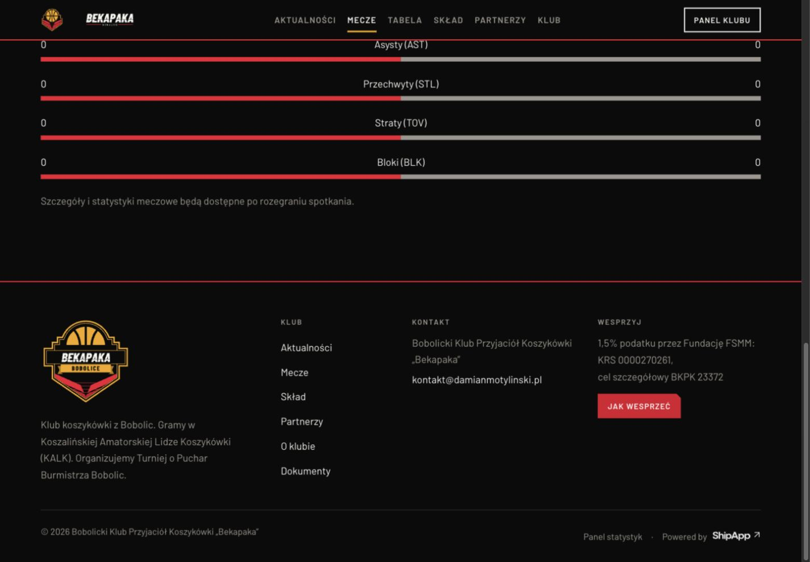
Zaplanowany mecz nadal pokazuje zerowe porównanie
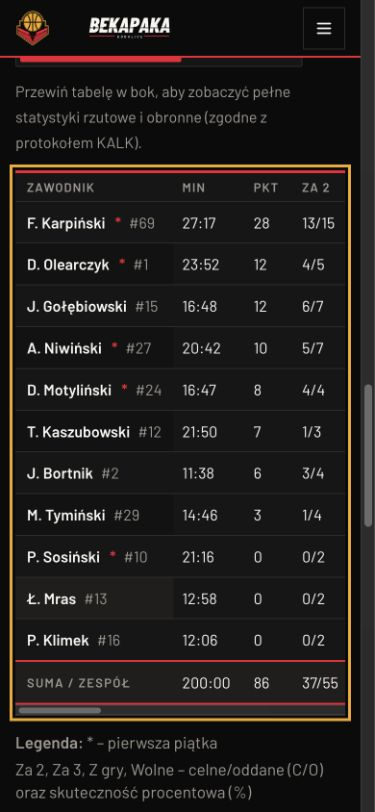
Mobilny box score ma sticky nazwisko i 22 kolumny
2. Artykuł i galeria: poprawiony plakat oraz fokus, niepełna redakcja
Plakat w całości i kontrast etykiety poprawiono. Link powrotu jest widoczny przy fokusie. Relacja nadal nie ma szybkiej nawigacji; galeria nie ma pełnych metadanych i stanów.
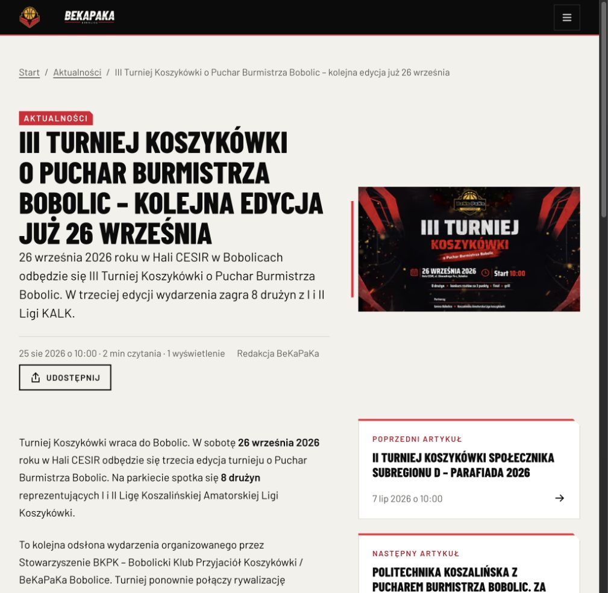
Pełny plakat przy 1024 px
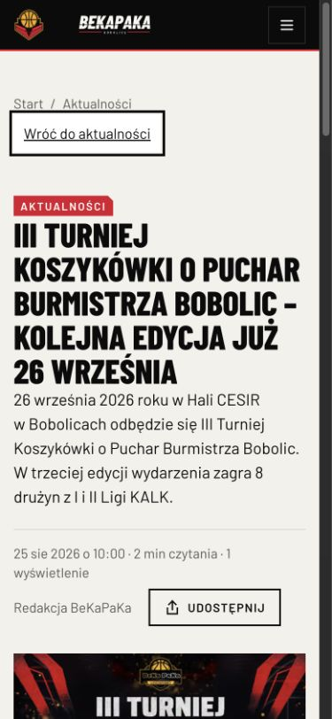
Widoczny link powrotu po Shift+Tab
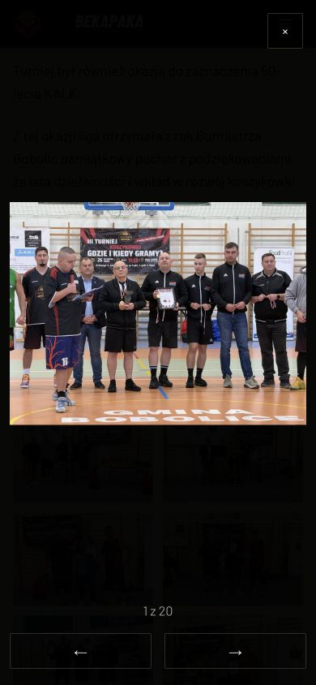
Powiększenie zdjęcia i sterowanie pod nim
3. Aktualności: poprawione kategorie, otwarte archiwalne terminy
Wszystkie cztery kategorie są widoczne; historyczny trening nadal brzmi jak bieżący nabór.
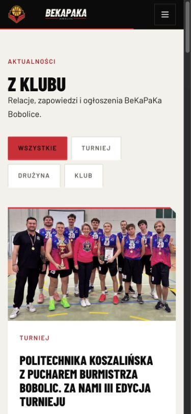
Wszystkie kategorie na telefonie
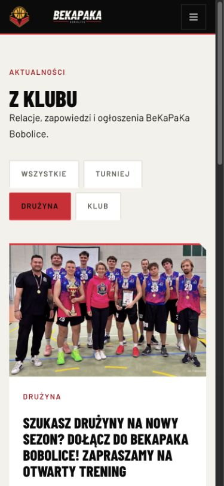
Historyczne zaproszenie na trening
4. Skład i profil: działają osobne adresy, kontekst danych wymaga uzupełnienia
Lista ma 20 osób, 11 portretów i 9 placeholderów. Średnie profilu są bez maski; brak sezonu i mianowników procentów pozostaje.
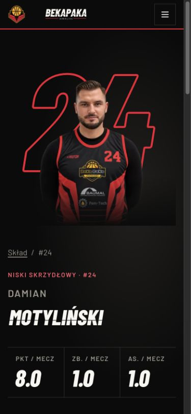
Samodzielny profil Damiana
5. Tabela: czytelny scroll, częściowy kontekst
Przy scrollLeft 337 px sticky drużyna pozostaje przy x=16 px. Tabela ma 680 px we własnym kontenerze 343 px. Sezon i legenda są widoczne, ale aktualizacja/źródło sezonu nie są domknięte.
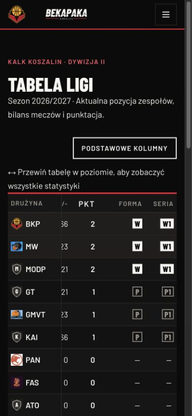
Tabela po przewinięciu, z przypiętą drużyną
6. Klub, wsparcie i menu: działające kotwice oraz fokus
Kontakt i wsparcie mają skróty. Kopiowanie poprzedza QR i mieści się bez scrolla. Brak dostępnego komunikatu wyniku kopiowania; menu nie ma końcowej nazwy stowarzyszenia. Sprawdzono Shift+Tab z pierwszego przycisku do ostatniego linku, Escape i powrót do hamburgera.
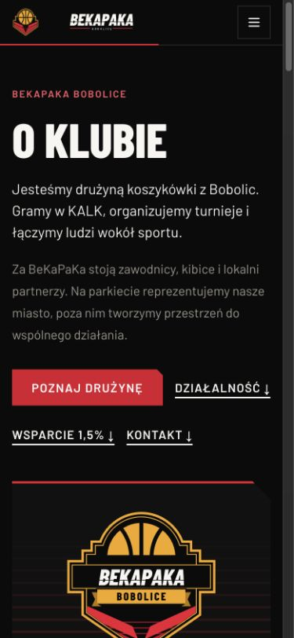
Skróty w hero klubu
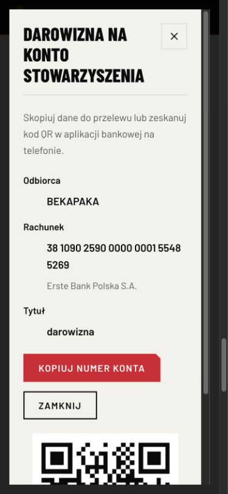
Kopiowanie danych przed QR
7. Partnerzy i dokumenty: działające dalsze akcje, niepełny odbiór
Partnerzy tworzą pełne trzy rzędy po pięć, ale oferta wymaga potwierdzenia. Dokumenty mają ścieżkę powrotu i kontaktu, lecz pusty czarny pas pozostał.
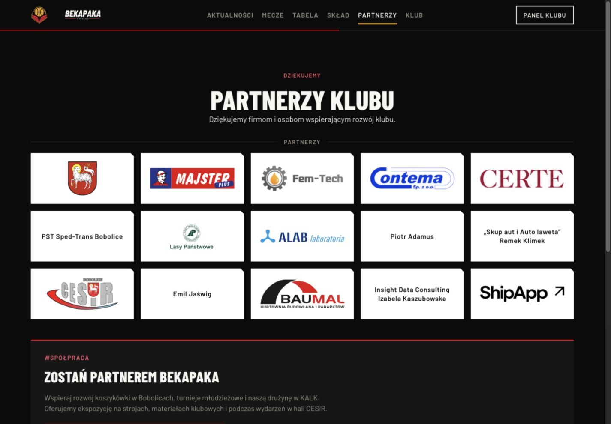
Piętnaście partnerów i blok współpracy
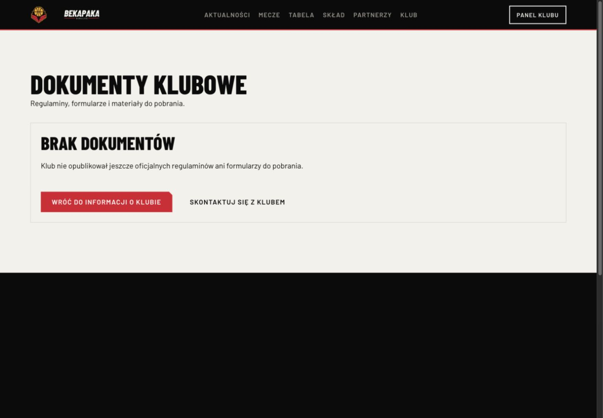
Dokumenty: działające akcje i niedomknięte tło
8. Produkcja: wcześniejszy interfejs, lokalny postęp nie jest wdrożeniem
Publiczną homepage odczytano i sfotografowano, bez logowania i bez działań na serwerze. To ograniczona kontrola jednej strony, nie pełny audyt produkcyjny.
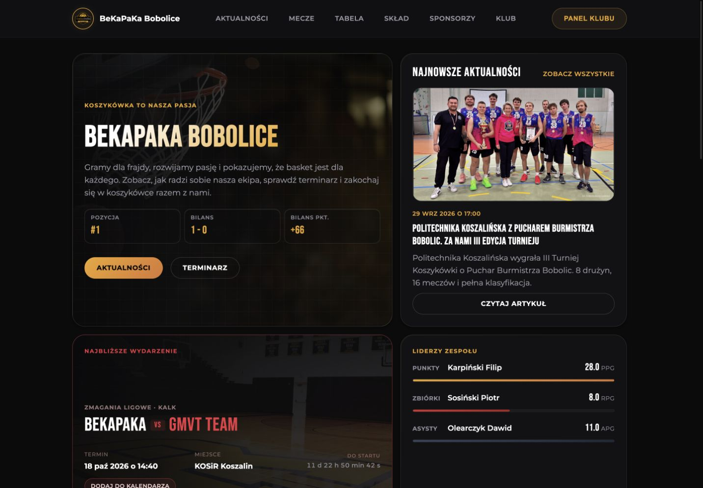
Publiczna homepage nadal prezentuje wcześniejszą wersję
Stan repozytorium i gotowość wdrożenia
HEAD lokalnego repozytorium to 7de521c z 4.10.2026. W chwili kontroli było 96 zmienionych plików śledzonych; nowe elementy są także nieśledzone. Duża część kodu 2.0 oraz współdzielonych pakietów nie jest więc odzwierciedlona w tym commicie. Nie wykonano commit/push ani nie zmieniano istniejących prac użytkownika.
Poza UI istnieją zmiany backendu i panelu: współdzielona walidacja sześciu statusów meczu, administratorowy edytor presentation, endpoint aktualizacji i rewalidacja, kolumny presentation/presentationUpdatedAt dla Game/KalkMatch oraz migracja 20261005000000_match_presentation. Są również kolekcja CMS media-record i zmiany kontekstów Docker/CI do kopiowania współdzielonych pakietów. Testy jednostkowe i build panelu przechodzą; nie sprawdzano rzeczywistego zapisu edytora, działania migracji ani rewalidacji między uruchomionymi usługami.
Nie ma podstaw do oznaczenia projektu jako w pełni odebranego lub wdrożonego. Sam build strony nie weryfikuje obrazów Docker, uprawnień nowej kolekcji, integracji DB ani konfiguracji serwera. Przed osobno zleconym deployem należy zastosować runbooki z AGENTS.md oraz odbiór migracji, backupu i rollbacku. Ta sesja nie dotykała VPS ani MOYA.
Kolejność domknięcia
1. Domknąć etap A: stany bez danych, podstawowy mobilny box score, powiększenie plakatu; utrzymać już poprawione linki, kontrast i fokus.
2. Wyjaśnić treści i źródła: oferta/kontakt, numer Sosińskiego, aktywny skład, kontekst rzutów, metadane zdjęć, historyczne terminy i dokumenty.
3. Dokończyć wspólne wzorce: shell/tło, krótszy homepage/stopka, skróty relacji, sizes miniatur, stan lightboxa i aria-live kopiowania.
4. Przeprowadzić odbiór: wszystkie sześć statusów, błędy/cache/offline, 375/390/430/768/1024/1440 px, zoom 200%, Safari/Firefox, czytniki, aktualny Lighthouse i transfery; integracje na izolowanej bazie/CMS.
5. Dopiero po odbiorze przygotować konkretny deploy z migracjami i rollbackiem. Obecny raport nie jest jego wykonaniem ani autoryzacją publikacji nowych treści.
Ograniczenia
Brak nowych pomiarów Lighthouse, axe, HAR, INP i dotyku/swipe na urządzeniu; brak pełnych testów Safari/Firefox, VoiceOver/TalkBack, zoomu i wszystkich profili/statusów. Nie testowano cyklu publish/unpublish ani ręcznego edytora meczu na bazie. Test kopii schowka zakończono na odbiorze położenia kontrolki, kodu feedbacku oraz zamykania; nie weryfikowano odczytem schowka rzeczywistego sukcesu. Nie otwierano zewnętrznego Google Maps ani nie zatwierdzano adresu hali. Ocenę optyczną partnerów należy traktować jako obserwację wizualną, a nie decyzję o poziomach współpracy.
Dowody są przypisane do aktualnego lokalnego stanu i odczytu publicznej homepage. Nie przypisywano przyczyn ani dat wdrożenia tylko na podstawie czasu modyfikacji pliku. Różnice wysokości względem wcześniejszego raportu obejmują także bieżące dane i nową treść; nie są izolowanym benchmarkiem CSS.